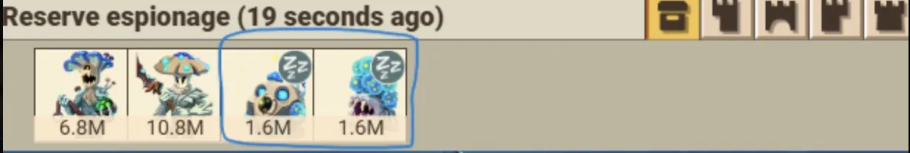
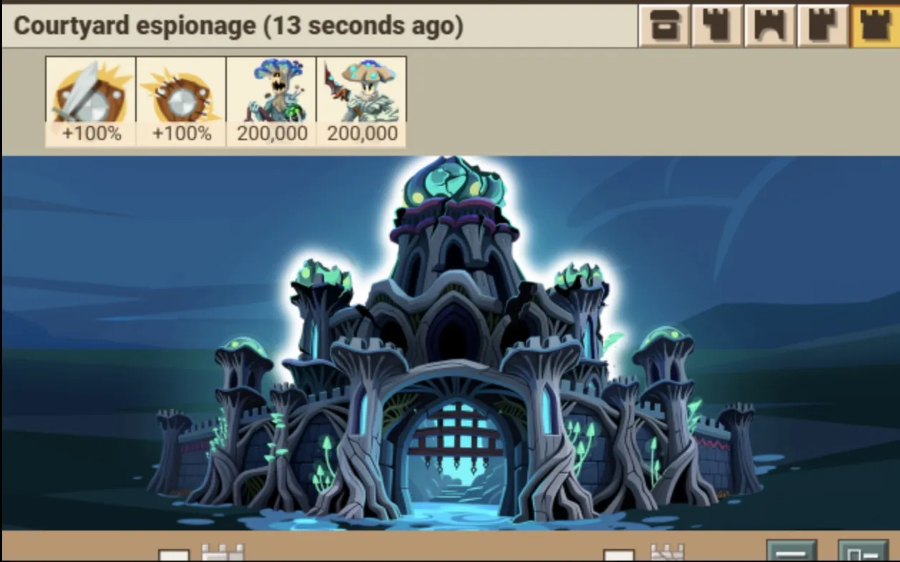
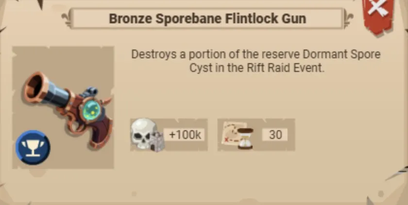
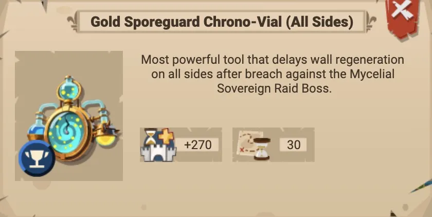
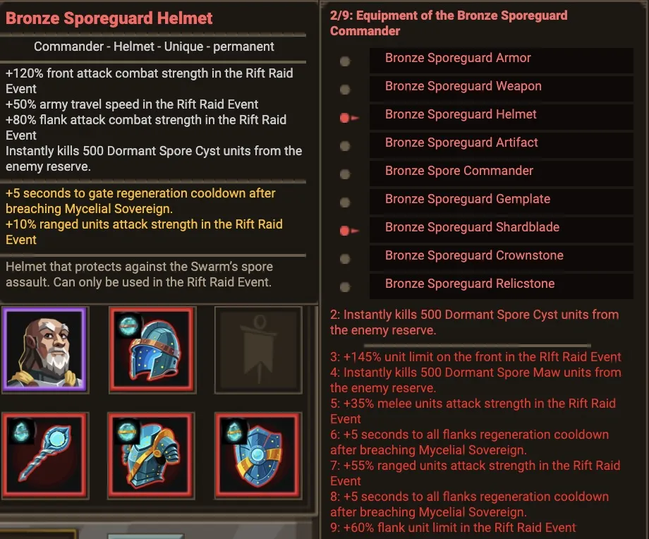
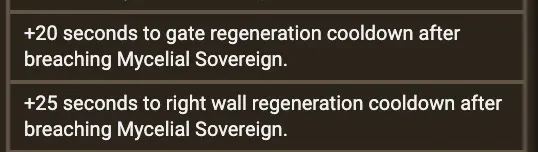

The Mycelial Sovereign is the Fungal Rift boss. Its gimmick is the spores: dormant cysts that pile up in the reserve through the early stages and then wake up for a brutal finish. Beat it the easy way and you spend the event's free tools at the right moment instead of throwing them away. This builds on the Rift Raid Basics — read that first if reserves, breaches and regeneration are new to you.
Stages 1–4: the 50/50 split & the dormant spores
Through the opening health stages the Fungal courtyard splits its defence roughly 50/50 between two segments, so a clean counter-send chews through it. The catch is what's building up out of sight: after each stage the boss dumps a large batch of "dormant" spores into the reserve. They sit there asleep — you can see them in the reserve espionage view marked with a 💤 sleep icon — doing nothing yet, just stockpiling for stage 5.


Stage 5: the spores wake up
At the start of the 5th stage all the dormant spores activate and become significantly stronger. This is the wall everyone hits — which is exactly why the event hands you tools built to clear that reserve before it activates.
The free spore-killing tools: gun & flask
Two event tools exist purely to destroy dormant spores out of the reserve: the Sporebane Flintlock Gun and the grenade flask. Each one deletes a chunk of the sleeping cysts so far fewer of them ever wake up.

- Save them for the harder stages, but spend them between stages 1 and 5, while the spores are still dormant in the reserve.
- Don't fire them in stage 0 or stage 5 — there's nothing dormant to delete, so the tool is consumed anyway and kills nothing. Pure waste.
Chrono-Vial timers: hold the wall open for the team
The other Fungal-specific tool is the Sporeguard Chrono-Vial — the "timer." It delays wall regeneration after a breach, holding the segment open longer so the whole alliance can pour courtyard hits through one breach. They come in bronze, silver and gold, each in four variants — left, gate, right, and all sides.

Bonus: the Sporeguard set + the 32-wolf timer trick
The equipment set the Fungal boss drops — the Sporeguard set — has lower overall stats than your main rift gear, so it won't win you the big courtyard clears. But its in-event bonuses are gold for support: free spore kills and free wall-regeneration delay baked right into the gear.


The short version
- Stages 1–4: exploit the 50/50 split; spores stack up dormant in the reserve.
- Spend the gun/flask between stages 1–5 to delete dormant spores — never in stage 0 or stage 5 (wasted). Favour the gun so finishers can be ranged-only.
- Stage 5: the spores wake up strong — but far fewer if you cleared them.
- Chrono-Vials (bronze/silver/gold × left/gate/right/all) hold breaches open — stack them as a team; not usable vs Mistress of Decay.
- Sporeguard set + 32 wolves = free timers and free spore kills on repeat.
Pair this with the tools below — the Rift Wall-Break Simulator in the VIP Corner can tell you whether a given send actually breaks the wall, and the Rift Raid Bosses overview lists every stage's wall/gate percentages.